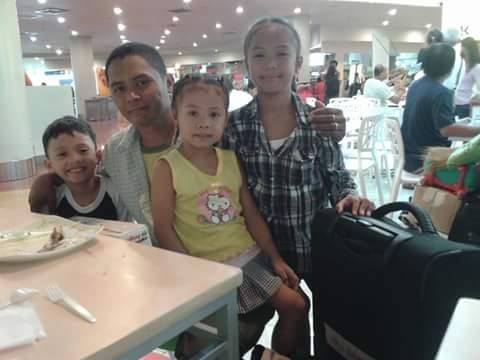
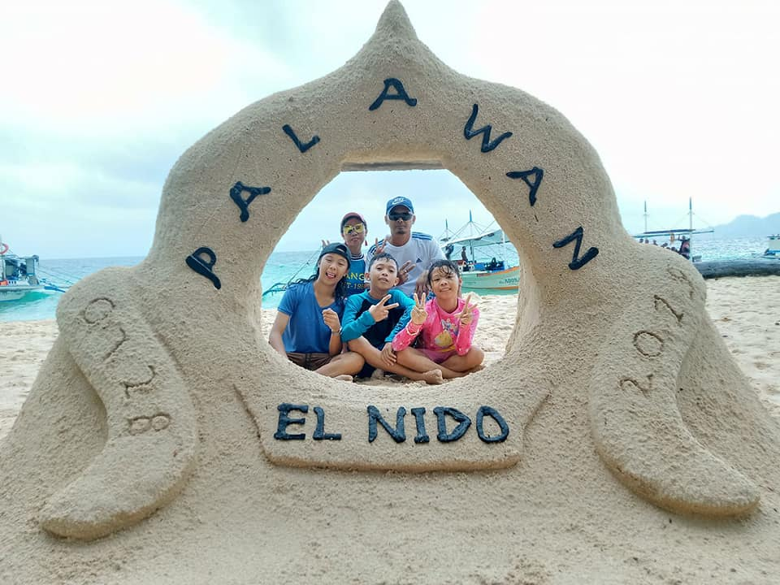

The Beginning of Our Journey
Our journey began with an exciting flight from Cebu to Manila, where we were lucky enough to meet a famous actor on the plane, adding a touch of glamour to the start of our trip. Manila’s busy streets greeted us, but we were eager to explore the city further. One of the first places we visited was Ocean Park, where we got an up-close view of marine life in the underwater tunnel and enjoyed the exhibits showcasing the Philippines' diverse sea creatures.
Our next stop was Rizal Park, a historical landmark dedicated to the Philippines' national hero, Dr. Jose Rizal. We spent some time walking through the park, learning about the country’s history, and reflecting on the significance of this monument. It was an unforgettable experience that helped us connect more deeply with the culture and heritage of Manila.
Below are some unforgettable moments from our adventure:
- Encountered a local celebrity on the plane to Manila
- Visited Ocean Park and marveled at the underwater world
- Walked through Rizal Park and learned about Filipino history
- Experienced traditional Filipino cuisine in Manila
- Visited historical sites and learned about the country’s rich history
Our Favorite Activities
There were many activities we loved, but a few stood out as highlights of our trip. These activities gave us a deeper appreciation of the places we visited and created memories that we will cherish forever.
- Exploring hidden beaches that could only be reached by boat
- Snorkeling in pristine coral reefs, surrounded by colorful marine life
- Witnessing vibrant coral ecosystems up close
- Indulging in fresh, locally caught seafood, from grilled fish to coconut-infused dishes
- Kayaking through crystal-clear lagoons, feeling at one with nature
- Enjoying the lively atmosphere of night markets in Manila
Manila Adventure
Our visit to Ocean Park and Rizal Park in Manila was an unforgettable part of our journey. The vibrant marine life at Ocean Park and the historical significance of Rizal Park left a lasting impression on us. These experiences, along with the chance to meet a local celebrity, made our time in Manila even more special. It was the perfect introduction to the beauty and culture of the Philippines.
Unforgettable Experience
Island hopping in Palawan was, without a doubt, one of the most unforgettable experiences of our lives. The combination of crystal-clear waters, stunning rock formations, and the serenity of the islands made it a magical place. We swam in lagoons, discovered underwater worlds, and enjoyed sunsets that seemed to last forever. It was a journey that brought us closer to nature, to each other, and to the beauty of the Philippines.
Final Thoughts on Our Journey
This journey was more than just a vacation; it was a series of experiences that taught us about different cultures, the beauty of nature, and the warmth of the people we encountered. From the bustling streets of Manila to the tranquil beaches of Palawan, every moment was filled with discovery and awe.
We hope our story inspires you to seek out your own adventures, whether close to home or in far-off lands. There’s always something beautiful waiting to be found if you take the time to look for it.